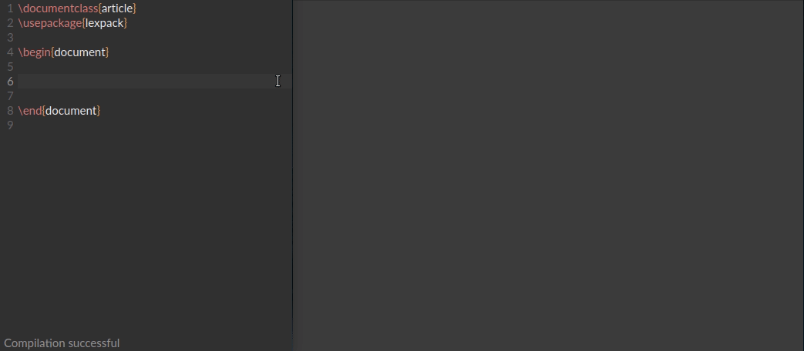
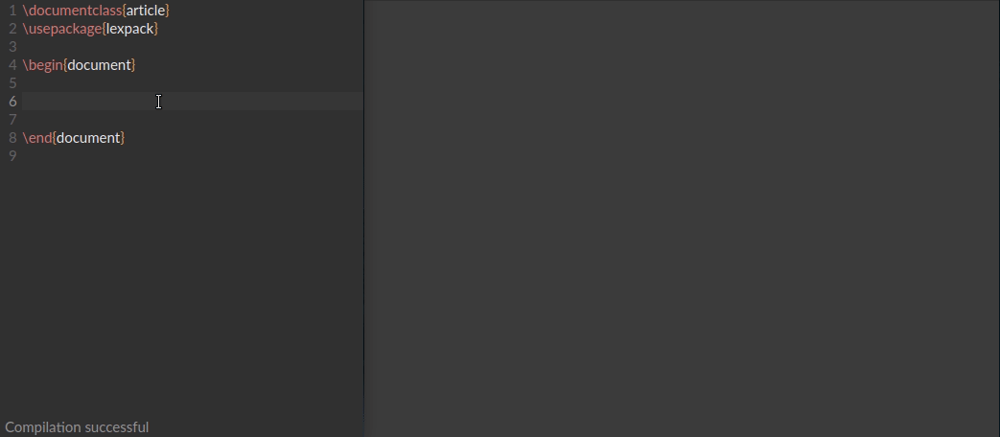
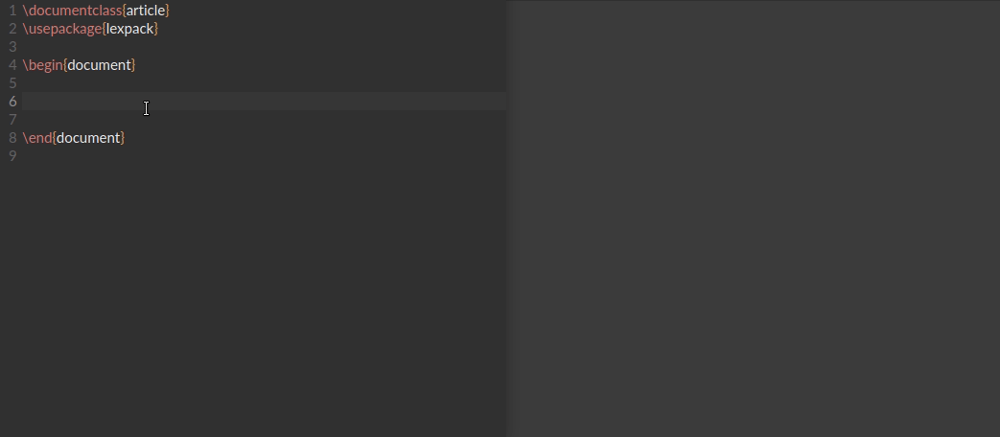

Для вставки формул используется новый математический режим, начало и конец которого обозначается обратным апострофом (символ `) для обычной формулы, и парой обратных апострофов для межстрочной формулы. Не важно, на какой раскладке вы находитесь, так как при нажатии буквы "ё" произойдет переход к английской раскладке в математическом режиме, после формулы — автоматический выход из него.
В новом режиме используются сниппеты, которые преобразуют текстовые блоки сначала в Unicode символы, а потом в их LaTeX обозначения. Кроме этого, рациональные выражения, матрицы и системы записываются в естественном виде.
Благодаря большому количеству встроенных сниппетов вставка структурных элементов упрощена до предела. Большинство используемых в лекциях элементов уже есть в стилевом пакете LexPack, с их испольхованием можно ознакомиться в репозитории, в папке examples.

Для вставки векторных изображений в формате TikZ в LexType встроен редактор, с помощью которого возможно в несколько кликов нарисовать большниство зарисовок, которые могут встретиться на лекциях.
Возможности LexType не ограничиваются тем, что здесь продемонстрировано. Скачайте его и попробуйте сами!